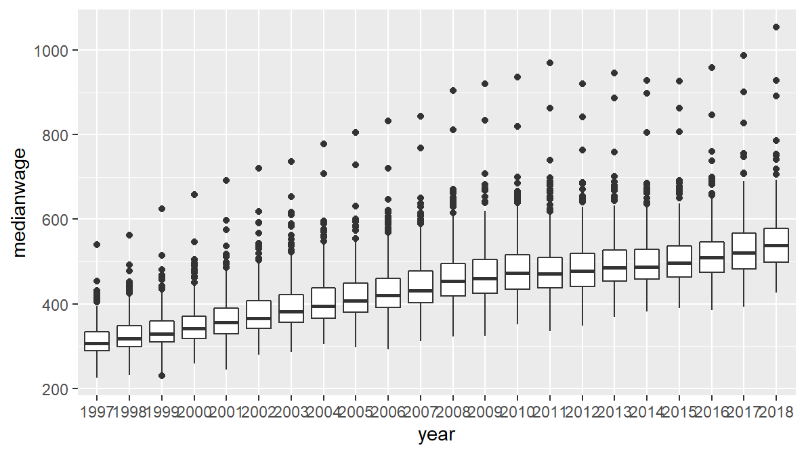
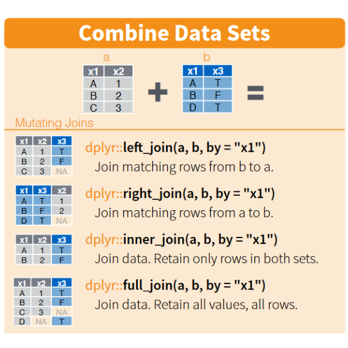
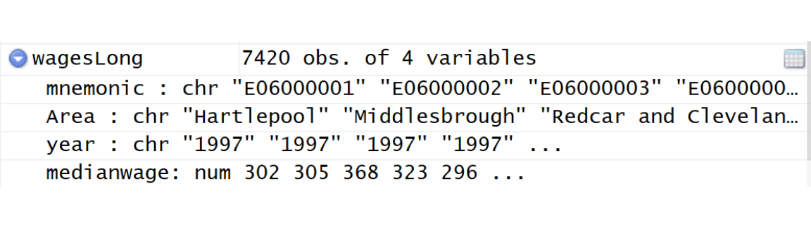
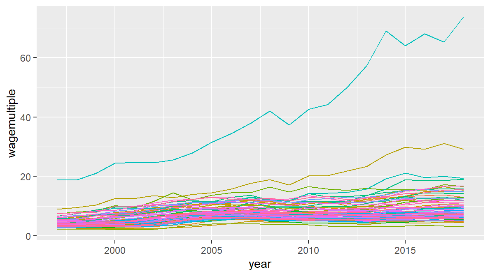
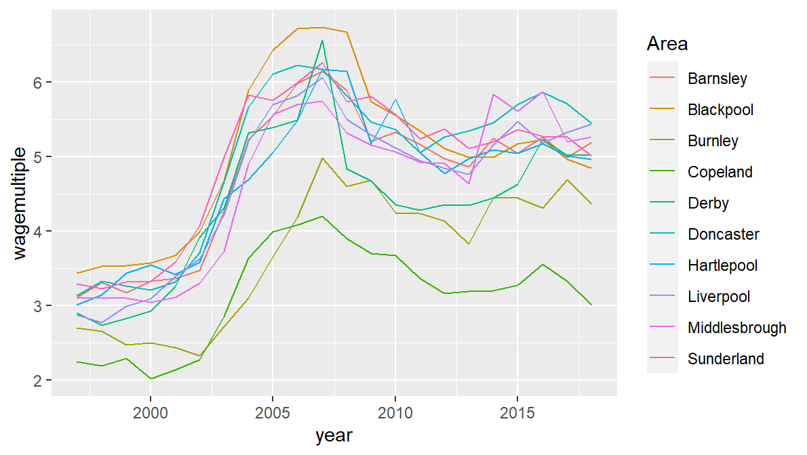
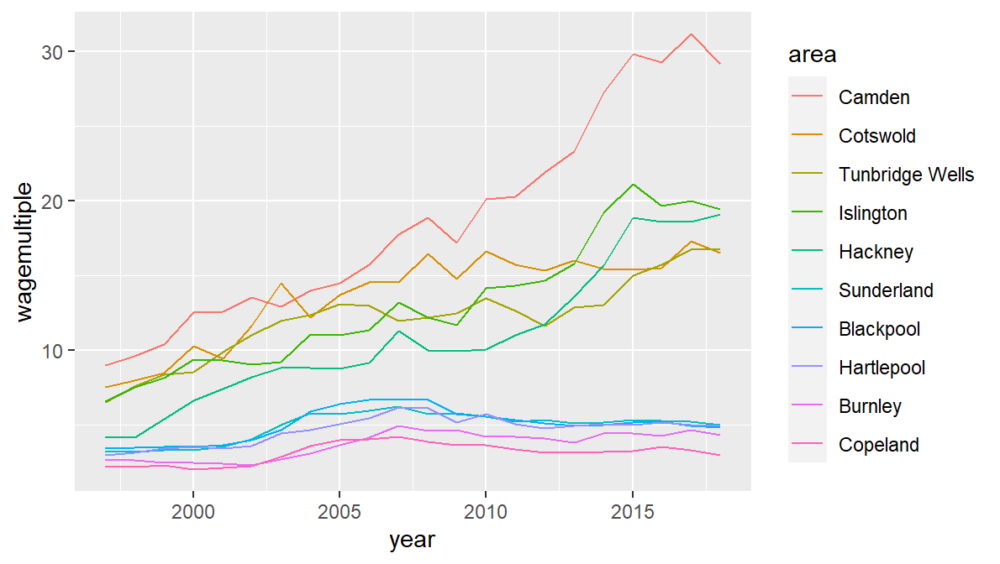
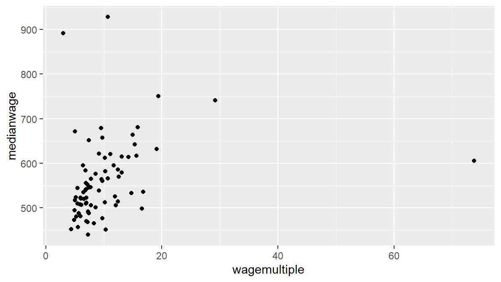

15 Joining data sources together
It would be very useful to be able to adjust our house price data to something that’s consistent over time. But how? We could use some value for inflation, but this doesn’t actually include house price change and would only provide a single adjustment figure for the whole of England.
Another option is to use wages over time. Not only does this give a simple measure of house cost - house price as a multiple of the average wage - but it varies by region, giving a much more localised measure.
To do this, we need to link the housing data to wage data. Linking two datasets together is often an essential part of visualisation when there is a need to compare or supplement information.
R’s base commands are not bad for this, but dplyr’s join functions do the job a little bit quicker.
So first, let’s load the wage data (taken from NOMIS). It’s in CSV format and we’ll use the readr library mentioned earlier, loaded as part of the tidyverse package. Again, remember - you can type ‘data/med’ and use autocomplete to get the rest of the file name.
wages <- read_csv('data/medianWages_localAuthority.csv')Click on the new dataframe in the environment panel: it consists of:
- a column each for the local authority name and code (the ‘mnemonic’ column)
- One column per year from 1997 to 2018
15.1 `Gathering’ into long form
We want to merge this with the housing data summary so that each median wage per year per local authority is matched against the average price at that time and place.
But this is currently wide data - the year variable is spread across columns. So the first thing to do: gather the years into their own column so that it matches the single year column in the house sales data.
This can be done with another tidyverse library: tidyr. This just requires two things:
- Give tidyr a name for the key and value columns. You can decide on these names. Let’s go for a key of year and value column name as medianwage.
- Tell it which columns to gather.
We can use the pipe operator. This looks like:
wagesLong <- wages %>%
gather(key = year, value = medianwage, `1997`:`2018`)Note: in this case, the column names in the range we passed in needed surrounding with backticks (very top left on the keyboard). Why? If column names are numbers, R can’t parse them well - the tick marks are needed to pass in the names correctly. If they had been plain text, the ticks marks wouldn’t be needed. Another joyous R foible.
Take a look via the environment pane: we now have the wage data in long form. Note: we didn’t have to say anything about the remaining local authority columns: tidyr automatically repeats these for us.
Now it’s in long form, here’s an opportunity to use another stat from ggplot
ggplot(wagesLong, aes(x = year, y = medianwage)) +
geom_boxplot()
A boxplot can help get a quick look at the shape of the data. In this case, it’s easy to see median wages going up over time - so the data looks sensible.
15.2 Saving and reloading the housing data
Because memory is a little tight, let’s load a different selection of the housing data. This is in exactly the same format as before, it’s just sales from a selection of local authorities, rather than TTWAs.
If you want to save your previous sales data or any of your other dataframes, now would be a good time. We can then overwrite some of these files without fear of losing anything. Although we’ve only added the year field so far, so nothing drastic will be lost.
The saveRDS function is a good way to do this: it saves the dataframes as compressed objects that (a) are very compact and (b) reload in exactly the same form. So for instance, saving to our data folder:
saveRDS(sales,'data/salesTTWAwithYearAdded.rds')And feel free to save any other dataframes you want to return to.
We can then overwrite the sales variable with the new price data. Again, it’s a long file name so use autocomplete again!
sales <- readRDS('data/landRegistryPricePaidLocalAuthoritySelection.rds')And we’ll also need to re-add the year column:
sales$year <- year(sales$date)15.3 Merging the housing and wages data
Now we’ve got both of our datasets to combine, let’s stop for a moment and think through what we’re aiming for.
- The (long) wage data gives us the median wage for each year and each local authority - one row for each of these combinations.
- We want to know how many multiples of this wage you’d pay for the average-priced house in each local authority.
- Which means, first - we need to repeat our dplyr summarising, but this time at the local authority level, so it matches our wage data. We want it to also have one row per year / local authority combination.
So we first need to summarise the sales data as we did before. Notice how dplyr makes this a simple change compared to before. We just replace ttwa with the new geography:
saleSummary <- sales %>%
group_by(localauthority,year) %>%
summarise(meanPrice = mean(price))## `summarise()` has grouped output by 'localauthority'. You can override using the `.groups` argument.Looking at the result, we can see this matches the structure of wagesLong: one column for year and one for the local authority.
This stuff is (for me at any rate!) always a little confusing!. It is rarely an intuitive process! Taking the time to look at the data in the View panel can be really helpful for making sense of what’s going on.
We’re now ready to merge in the median wages.
The dplyr cheatsheet has a neat diagram showing our various joining options. We want to use an inner join because we only want to keep local authorities that the two dataframes have in common.

When doing joins, it’s generally wise to make a new variable. Joins often go wrong on first attempts: it’s useful to be able to compare with the previous data to make sure it’s done what you wanted it to.
Note also: when merging/joining, it’s often necessary to do some checks that the data is formatted in the same way in both cases for the join fields, especially for variables like postcodes that may contain spaces. We’ll see an example of this in a moment…
The dplyr cheatsheet shows how to use join to merge on single variables - that’s nice and straightforward. But there are two more things to consider here:
- We want to join on both year and local authority. This is solved by passing in a vector of the columns to join on.
- The variable name containing the local authorities is not the same in both dataframes. This is solved by supplying both names connected with an equals.
This looks like this, and should work…
price_n_wage <- inner_join(
wagesLong,
saleSummary,
by = c('year', 'Area' = 'localauthority')
)… but, oh dear, not quite. What went wrong? This is a rare occasion when an R error message is actually informative: ``Can’t join on ‘year’ x ‘year’ because of incompatible types (character / numeric)’’
Ah: the year variable in one of them is in character format, not number. But which? Looking in the environment panel, we can click on the arrow symbol to look. This reveals, under wagesLong:

The `chr’ next to year show it’s a character column. So when we gathered the year column names, they were kept as characters. Before we can merge, we have to make them the same format:
wagesLong$year <- as.numeric(wagesLong$year)Looking back in the environment panel, wagesLong’s year column is now showing itself as num. And now we should be able to join:
price_n_wage <- inner_join(
wagesLong,
saleSummary,
by = c('year', 'Area' = 'localauthority')
)Check price_n_wage via the environment panel: we’ve now got mean price and median wage in the same rows.
Now we’ve got those columns together, there are two more things to do:
- It’s currently the weekly median wage. We want yearly, to get house price as a multiple of yearly pay.
- Once we’ve got yearly pay, turn the house prices into a multiple of this.
How? Time for:
Verb 4: mutate. This allows us to make whole new variables and attach them to our existing dataframe.
All mutate does: it creates new variables and attaches them to the existing dataframe. This can be something as simple as a single value. Or, say we want to create a flag indicating areas with a median wage above £300 a week. Using the pipe operator, that would look like:
price_n_wage <- price_n_wage %>%
mutate(wages_above_300 = medianwage > 300)Incidentally, we don’t really need that column, so we can drop it with select and using a minus:
price_n_wage <- price_n_wage %>%
select(-wages_above_300)We want to use mutate for those two jobs: convert the weekly wage to a yearly one, and divide the mean property price by the yearly wage to get a wage multiple value as a house price index.
As with summarise, mutate can do multiple variables at the same time. And, very handily, dplyr is also a lazyeval function. Which means what? This:
We can define one variable and then use it immediately in the next one. So we can work out yearly pay, then immediately use that to find the house price multiple. Thus:
price_n_wage <- price_n_wage %>%
mutate(
medianwageyearly = medianwage * 52, # weekly wage to yearly wage
wagemultiple = meanPrice / medianwageyearly # house price as multiple of that yearly wage
)Look again the the price_n_wage dataframe to check it’s done what we wanted - and then we can try a plot.
There are too many local authorities to fit in a legend, so we can use the guides code mentioned above when we plot, to remove the legend so we can get a look at all the data together without the legend messing up the plot. (Try it without the guides function to see what I mean.)
ggplot(price_n_wage, aes(x = year, y = wagemultiple, colour = Area)) +
geom_line() +
guides(colour = F)
So: we now have house prices as a ratio of median yearly wages. And there’s one crazily high outlier and it’s difficult to see any effect from the crash. But there are a lot of local authorities here - how to pick out ones we want to look at?
15.4 Choosing a subset based on some criterion
A useful first step to deciding how to pare down your data is to make an ordered list of some variable of interest to look at. So say we want to see:
- The order of wage multiples in the final full year of the data
The advantage of making a separate list is: we can then use it as a tool for selection. But first, let’s make it. We can just use filter to pick out the year we want - but here’s a new verb:
Verb 5: arrange. This re-orders the actual dataframe much as sort does in Excel. That’s quite different to anything else we’ve look at, where the actual row order of the data itself didn’t really matter. (It has no impact on grouping or the order of category drawing, for instance).
This is really useful for two reasons: first, if we actually want to see the order ourselves. Second, there are some functions that depend on data order, such as lag (see the window functions on the dplyr cheatsheet).
So here’s the code:
- use filter to get 2018 only then
- use arrange to sort the whole dataframe by the wage multiple. Make it in descending order with the minus.
price_n_wage2018 <- price_n_wage %>%
filter(year == 2018) %>%
arrange(-wagemultiple)Take a look at the new dataframe: the highest wage multiple is at the top and we can see what local authority it applies to. No surprise, London local authorities dominate the top of the list. And right at the top, way out in the lead, is Kensington and Chelsea. Could this be a combination of England’s most expensive housing with a mixed population (so a lower median wage)?
We can use a dataframe like this to guide subsetting decisions for graphs. The essential principle is to use our selecting dataframe to subset the zones we want.
Say we want to look only at the ten local authorities with the lowest wage multiple in 2018. By looking at the data, we can see this is those with a wage multiple below 5.78.
zoneselection <- price_n_wage2018 %>% filter(wagemultiple < 5.78)Or, because the data is ordered by wage multiple, we could just grab the bottom ten from the dataframe using the tail function (the opposite of head, this gives us the last rows):
zoneselection <- price_n_wage2018 %>% tail(10)Once have this selection, we can tell ggplot: ``filter areas by those %in% our zone selection’’. This is the same principle as when we removed London - using a logical operator in filter:
ggplot(price_n_wage %>% filter(Area %in% zoneselection$Area),
aes(x = year, y = wagemultiple, colour = Area)) +
geom_line() 
The %in% operator is fantastic: it can be used for multiple selections. As with everything else in R, it works with vectors - we just passed it a dataframe column, which is a vector. If we wanted to pass a vector directly, we could - e.g.:
ggplot(price_n_wage %>% filter(Area %in% c('Camden','Oxford','Wirral','Liverpool')),
aes(x = year, y = wagemultiple, colour = Area)) +
geom_line() So the impact of the crash appears to be quite apparent in some of the local authorities with the cheapest housing. Wage multiples appear to have decreased over time since the crash.
You might also want to select particular row numbers based on the data you can see in the View panel. Row numbers are shown on the left. Say we want to look at the top and bottom five but exclude Kensington and Chelsea. We can use a new dplyr verb:
Verb 6: slice. Pass in the row numbers you want - simple. Put a minus before the selection to keep all but those. Place in a vector for multiple selections.
#Top ten, excluding Kensington and Chelsea (no vector function needed)
zoneselection <- price_n_wage2018 %>% slice(2:11)
#Top and bottom five, excluding Kensington and Chelsea
#Use a vector function for multiple selection
zoneselection <- price_n_wage2018 %>% slice(c(2:6,72:76))So: plotting our selected top and bottom five. Let’s also add the fct_reorder code we used before to make the legend order more readable. And we’ll relabel the legend while we’re at it.
ggplot(price_n_wage %>% filter(Area %in% zoneselection$Area),
aes(x = year, y = wagemultiple, colour = fct_reorder(Area,-wagemultiple))) +
geom_line() +
labs(colour = 'area')
The advantage of using a selection dataframe or vector like this: the ggplot code doesn’t need to change. You just need to change the selection.
Pausing for a moment: looking at the plot of top and bottom local authorities by wage multiple, it’s easier to see something about the impact of the crash: places with cheaper housing have seen a drop in value, relative to wages. Pricier areas have carried on their upward climb, after a brief dip.
We’ll come back to the wage multiple data in the facets section later, if you want to look at this in more detail.
We’ll stop there, but it’s worth mulling the following: if we plot wage multiple of house price versus the actual wage…
ggplot(price_n_wage2018, aes(x = wagemultiple, y = medianwage)) +
geom_point()
… while there’s mostly a linear positive relationship, there are outliers in both directions: Kensington and Chelsea we’ve already seen, that’s the point on the right. But there are also places with very low wage multiples but high median wages. How might you dig into that further?